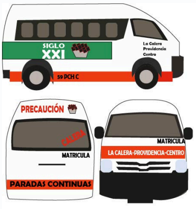

Ruta Calera
Rutas
Centro de Pachuca: Ubicado en el corazón de la ciudad, este es el punto
de inicio de nuestro viaje
Hospital General de Pachuca: Un importante centro médico ubicado
sobre la avenida Pachuca-Tulancingo.
Plaza Universidad: Un concurrido centro comercial al norte de la ciudad.
Universidad Autónoma del Estado de Hidalgo (UAEH): Una de las
universidades públ icas más prestigiosas del estado
La Providencia Siglo XXI: Un fraccionamiento moderno al sur de Pachuca
CBTis 286: Centro de Bachi l lerato Tecnológico Industrial y de Servicios
No. 286, ubicado en Paseos de Chavarría.
Universidad Tecnológica de Mineral de la Reforma ¡Tu destino!
Recuerda
Destino:
Universidad Tecnológica Mineral de la Reforma (UTMiR):
La misma unidad de transporte te dejara delante de la universidad
Recomendaciones o Precauciones a Tomar
- El tiempo de espera puede variar: Las combis pueden pasar seguidas o
tardarse un poco, hasta un máximo de 15 minutos
- Precio: El precio del pasaje en todas las combis de Pachuca es de $10
pesos en cualquier parada.
- Horario:El servicio de combis funciona de 6:00 am a 9:00 pm todos los
días de la semana.
Caracteristicas de la Urban
